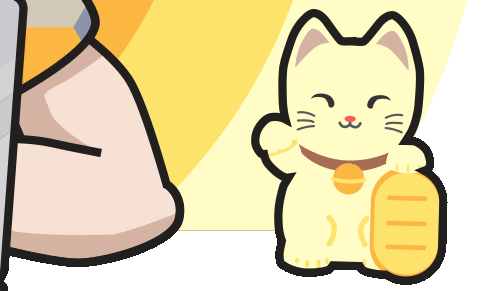
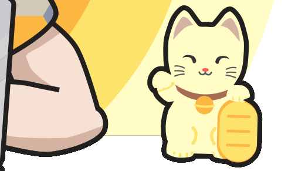

Genuine Communicator
I truly enjoy meeting new people, learning more about them and about what makes them tick.
This genuine
interest, as well as my past experiences in instructing and mentoring form the basis to my appreciation of
debating, taking part in strategy sessions and giving business presentations.
Being part of a team, as
well as leading teams has become a second nature to me, and I thrive in
collaborative environments.

Pathologically Curious
Inquisitive by nature and very passionate about learning new things, I love discovering and mastering new
fields.
My past roles in military and urban planning taught me how to be analytical and methodical when
identifying problems and then creative and flexible when ideating and formulating solutions.
 
